文章付箋セグメントは、 文章データ中に埋め込まれる指定付箋であり、 ページ割付け指定、行書式指定、文字指定、 文字修飾指定等の主に文章データを 2 次元的に表現するための情報を保持している。 文章付箋セグメントは文章データ中に埋め込まれるため、位置情報を持たない。 また、名称、表示色等の表示情報も持たないため、 文章付箋セグメント自体の表示方法はアプリケーションに依存する。 標準文章付箋セグメントとして、以下のものが定義されている。
| 標準文章付箋セグメント | セグメントID | |
|---|---|---|
| 文章ページ割付け指定付箋 | TS_TPAGE | (0xA0) |
| 行書式指定付箋 | TS_TRULER | (0xA1) |
| 文字指定付箋 | TS_TFONT | (0xA2) |
| 特殊文字指定付箋 | TS_TCHAR | (0xA3) |
| 文字割付け指定付箋 | TS_TATTR | (0xA4) |
| 文字修飾指定付箋 | TS_TSTYLE | (0xA5) |
| (予約) | ------ | (0xA6〜0xAC) |
| 変数参照指定付箋 | TS_TVAR | (0xAD) |
| 文章メモ指定付箋 | TS_TMEMO | (0xAE) |
| 文章アプリケーション指定付箋 | TS_TAPPL | (0xAF) |
文章付箋セグメントは以下に示す構造を持ち、 サブ ID により詳細な内容が規定される。 なお、サブ ID は、0 〜 127 の範囲の値を TAD 標準として使用し、 128 〜 255 は未定義 ( アプリケーション依存 ) とする。 アプリケーション依存の文章付箋セグメントには、 アプリケーション ID が含まれていないため、 異なるアプリケーション間での互換性は保証されない。
文字割付け付箋、および文字修飾付箋は、 サブ ID により区別される開始付箋と終了付箋に囲まれた範囲に対してのみ有効となる。 他の文章付箋セグメントは、 環境条件の指定であるため有効範囲の指定は特になく、 再度、環境が指定されるまで有効となる。 文章付箋セグメントの機能は非常に広範囲に渡るため、 基本レベルと拡張レベルの文章付箋セグメントにレベル分けされており、 原則的に文章を取り扱うアプリケーションは、 少なくとも基本レベルはサポートしているものとする。
文章ページ割付け指定付箋は、 文章データを指定した用紙上に ページ単位でレイアウトを行なうための情報を保持する付箋であり、 図形データ中に埋め込まれた文章データの場合は通常無視される。
文章データをレイアウトする用紙の大きさを指定する。 ここで指定するのは、レイアウト用紙であり、 実際に印刷される時の用紙 ( 印刷用紙 ) ではない。 レイアウト用紙にレイアウトした結果を、実際にどの印刷用紙に、 どのように印刷するか ( 例えば、印刷方向 ( ポートレイト / ランドスケープ ) は、 印刷時の指定による。 例えばレイアウト用紙が A4 の時、印刷時に、印刷用紙を A5 とすると、 A4 用紙にレイアウトされた結果が、 A5 用紙に縮小されて印刷されることになる。
LEN : 14
SUBID: 0
ATTR : UB attr -- 面付け、綴じ方向指定
DATA : UH length -- 用紙の長さ
UH width -- 用紙の幅
UH top -- オーバーレイ上マージン ( 天 )
UH bottom -- オーバーレイ下マージン ( 地 )
UH left -- オーバーレイ左マージン ( ノド )
UH right -- オーバーレイ右マージン ( 小口 )
オーバーレイ・マージンは、後述するオーバーレイ領域のマージン指定であり、
実際に文字をレイアウトする本文領域のマージンではない。
用紙の大きさ、オーバーレイ・マージンの指定は、
すべて座標系単位の値で示される。
用紙とオーバーレイ・マージンの関係を以下に示す。

文章データの本文のレイアウト領域のマージンを指定する。
LEN : 10
SUBID: 1
ATTR : UB − -- 未使用
DATA : UH top -- 上マージン ( 天 )
UH bottom -- 下マージン ( 地 )
UH left -- 左マージン ( ノド )
UH right -- 右マージン ( 小口 )
ここでのマージンは、本文のレイアウト用のマージンを意味する。
通常、本文のレイアウト領域はオーバーレイ領域より小さい。
用紙指定で 2 面付け指定を行なった場合は、
偶数ページでは、左右マージンは逆転する。
また、右綴じの指定を行なった場合も、左右マージンは逆転する。
マージンの値が、0xFFFF の場合は、
そのマージンは変更せずに現在の値を適用することを意味する。
例えば、左マージンのみを変更する場合は、上マージン、
下マージン、右マージンの値を 0xFFFF とする。
マージンの指定は、すべて座標系単位の値で示される。
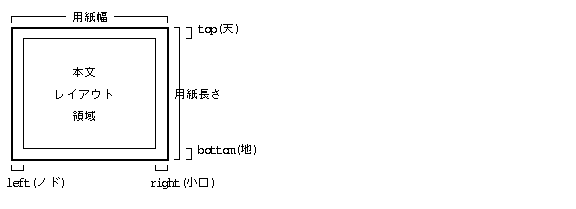
ページのレイアウトを複数コラム ( 段組み ) で行なうための指定であり、 コラム数と、コラムマージン ( コラム間余白 ) を指定する。 各コラムは均等幅となる。
LEN : 4, 6
SUBID: 2
ATTR : UB column -- コラム数、およびコラム長均等化指定
DATA : UH colsp -- コラムマージン
[ UH colline -- コラム間罫線 ]
DIWW KKKK
段組みの場合は、改コラムコード ( 0x0B ) により、
次 ( 右 ) のコラムに移行する。
例えば、column = 3 の時は、以下に示す段組みとなる。

コラム長の均等化を指定した場合、 次のコラム指定付箋の直前までの文章データを各コラムに均等に振り分け、 文章データが格納された各コラムの長さが揃うようにレイアウトされる。 直後に段抜き見出しを配置するような場合や文書の最終データの場合に使用される。 コラム長の均等化を指定しない場合は、改コラムコードが現れない限り、 各コラムに順に文章データをページの最下部まで詰めてレイアウトされる。

ページ途中でコラム数を変更する場合、前のコラムが均等化指定されていれば、 指定位置から新しいコラム数に変化するが、 固定長指定の場合は次ページ以降しか変化しない場合がある。 例えば、2 段組から段組なしへ変更した場合を以下に示す。


用紙上に重ねてレイアウトするオーバーレイ情報を定義する。 オーバーレイは最大 16 枚まで重ねることができる。 この機能は、通常は柱、ノンブル等の指定に使用されるが、 用紙の右マージン ( 小口 ) や左マージン ( ノド ) 部分、 さらに本文のレイアウト領域にも重なった指定も可能である。 この指定付箋はオーバーレイの定義を行なうだけで、 実際にそのオーバーレイが有効となるのは、 用紙オーバーレイ指定付箋でオーバーレイ番号が指定された場合である。
LEN : 〜 SUBID: 3 ATTR : UB attr -- オーバーレイ番号 / ページ適用属性 DATA : UB data[] -- オーバーレイする文章データ
xxPP NNNN
【文字サイズ指定等の環境設定】 AAA【充填文字】BBB【充填文字】CCC<改段落> 【充填行】 DDD【充填文字】【変数参照:ページ番号】【充填文字】FFF<改段落>
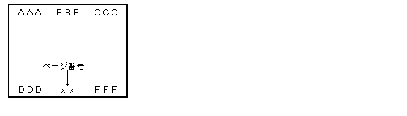
指定した用紙オーバーレイを、 この付箋がレイアウトされたページから実際に適用することを指定する。 用紙オーバーレイ指定付箋が現れるとそれまでの指定は無効となり、 その付箋で指定されるオーバーレイ番号群によって新たな設定がされる。 オーバーレイ指定をすべて取り消すためには、 オーバーレイ番号を 1 つも指定しない用紙オーバーレイ指定付箋の指定が必要となる。 用紙オーバーレイ処理がされた結果がレイアウト用紙となり、 その上に本文がレイアウトされる。
LEN : 4 SUBID: 4 ATTR : UB --- -- 未使用 DATA : UH overlay -- オーバーレイ指定
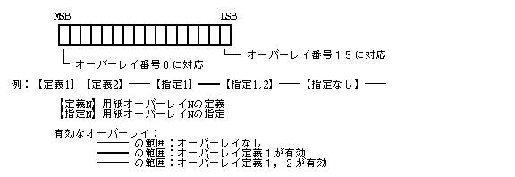
指定した大きさの枠をあけてレイアウトすることを指定する。 この付箋の直後に図形データが存在する場合は、 その図形データを枠内の中央に配置する。
LEN : 10 SUBID: 5 ATTR : UB attr -- 枠あけ属性 DATA : RECT area -- 枠あけ領域
APKx HHVV
attr が P = 0 の時は、枠あけ指定付箋が現れた位置以降で、 H, V あるいは area で指定された条件を満たす位置にレイアウトする。 従って、付箋が現れたページに配置されないことがありうる。 一方、P = 1 の時は、付箋の現れたページ内の条件を満たす位置に配置するため、 文章データの再レイアウト処理が発生する。

現在のページ番号、およびページ番号の増加ステップ数を指定する。 この付箋が存在するページから有効となる。
LEN : 4 SUBID: 6 ATTR : B step -- ページの増加ステップ DATA: UH num -- ページ開始番号

指定した条件に適合した場合に、改ページを行なう。
LEN : 2,4 SUBID: 7 ATTR : UB cond -- 条件 DATA :[ SCALE remain -- 残り領域指定 ]
見だしの直後で改ページされることを防ぐためには、 下記のパラメータを持つ付箋を見だしデータの直前に設定する ( この機能は、 タブ書式指定付箋の属性 P = 1 の場合に相当する )。
cond ( 条件 ) = 2 remain = ( 見だし行の高さ ) + ( 行間 ) + ( 本文行の高さ )
cond ( 条件 ) = 2 remain = ( 段落全体の高さ ( 行間も含む ) )
用紙の空き領域を空行で充填する。 1 つのページに複数の充填行がある場合は、 それぞれの充填行の高さは均等となる。
LEN : 2 SUBID: 8 ATTR : UB − -- 未使用
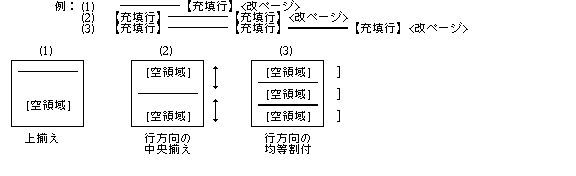
行書式指定付箋は、
行書式に関連する指定を行なう付箋であり、
必ず行または段落の区切りに存在する。
行または段落の区切りでない場合は、
この付箋の直前に行または段落の区切りがあるものと見なされる。
段落の概念を持たない従来のデータを交換する場合、
改行機能を現わすためには改段落コード ( 0x0A ) を用い、
改行コード ( 0x0D ) はフィールド内の改行でのみ使用する。
行ピッチの値としては、
改段落コードの場合には段落ピッチが、
改行コードの場合には改行ピッチが用いられる。
行書式としては、大きく以下の 2 種類があり、
いずれも段落単位で指定することになる。
次 ( 右 ) のフィールドへ移動する。
右端のフィールドでのタブコードは一番先頭 ( 左 )
のフィールドへ移動する。
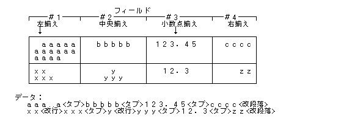
行の間隔を指定する。行の区切りとなる。
LEN : 4 SUBID: 0 ATTR : UB attr -- 属性指定 DATA : SCALE pitch -- 間隔指定
Dxxx xxxG
横書きの場合は、以下のようになる。
行高さの定義は、 行中の最大の文字の大きさ ( 拡大縮小された結果を含む ) である。 但し、行中の文字に付加された添字 あるいはルビ文字列は行の高さには含まれない。 埋め込み図形および仮身の高さは行高さに含まれるが、 行間隔の基準値には含まれない。
行間隔を指定する SCALE タイプのデータ。 比率指定の場合の基準値は行高さ ( ただし、埋め込み図形、仮身の高さを除く ) となる。
行揃えの方法を指定する。行の区切りとなる。
LEN : 2
SUBID: 1
ATTR : UB align -- 行揃えの方法
align: 行揃えの方法
0: 左揃え
1: 中央揃え
2: 右揃え
3: 両端揃え
4: 均等揃え
両端揃えと均等揃えの違いは、 揃える対象の文字列が割り付け対象領域の両端に接するか、 両端に均等間隔の空白が埋められるかの違いである。
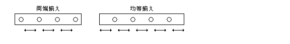
タブ書式を指定する。段落の区切りとなる。
LEN : 〜
SUBID: 2
ATTR : UB attr -- 属性
DATA : SCALE height -- 書式高さ指定
SCALE pargap -- 段落間隔指定
H left -- 行頭マージン
H right -- 行末マージン
H indent -- インデントマージン
H ntabs -- タブストップ設定数
UH tabs[] -- タブストップ位置 ( ntabs 個 )
Rxxx xxPP
＜段落 1＞ ＜書式指定付箋 A＞ ＜段落 2＞ ＜段落 3＞ ＜段落 4＞ ＜書式指定付箋 B＞ ＜段落 5＞ 段落 1 と 2 の間隔 : A の height 段落 2 と 3 の間隔 : A の pargap 段落 3 と 4 の間隔 : A の pargap 段落 4 と 5 の間隔 : B の height
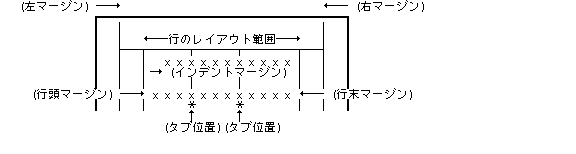
フィールド書式を指定する。段落の区切りとなる。 フィールド書式中では、 データ列中のタブコードにより次の右側のフィールドへ移動し、 改段落コードにより新たな下の段落へ移動する。 フィールド書式は主に、タブコードで区切られたデータ1つのフィールドとした表 形式のデータ表現に使用される。
LEN : 〜
SUBID: 3
ATTR : UB attr -- 属性
DATA: SCALE height -- 書式指定付箋自身の高さ
SCALE pargap -- 段落間隔
UH line -- フィールド段落線属性
H nfld -- フィールド設定数
-- UH fld -- フィールド開始位置
│ UH left -- フィールド内左マージン
│ UH right -- フィールド内右マージン
│ UH margin -- 小数点位置／インデントマージン
-- UH f_attr -- フィールド属性
: :
上記のデータをフィールド設定数分繰り返す。
Rxxx xxPP
DIWW KKKK
左揃え -- インデントマージン 中央揃え -- 無視される 右揃え -- 無視される 両端揃え -- インデントマージン 均等揃え -- 無視される 小数点揃え -- 小数点揃え位置
HxWW KKKK xxxx xAAA
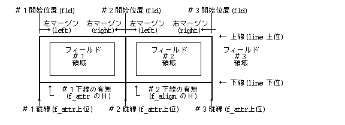
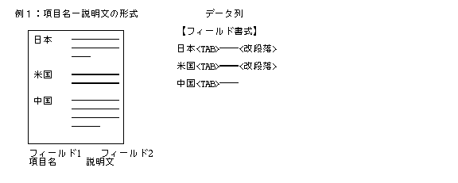
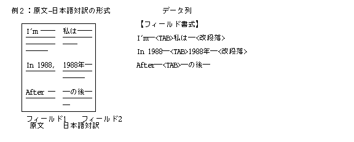
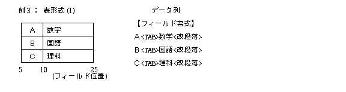
| フィールド 1 | 5 |
| フィールド 2 | 10 |
| フィールド 3 | 25 |
| フィールド 1 | 中央揃え、下線あり |
| フィールド 2 | 左揃え、下線あり |
| フィールド 3 | 任意 |

| 線の太さ | 線の種類 | |
| 上線: | 太線 | 実線 |
| 下線: | 任意 | 任意 |
| フィールド1 | 5 |
| フィールド2 | 10 |
| フィールド3 | 20 |
| フィールド4 | 30 |
| フィールド5 | 40 |
| 揃え | 下線有無 | 左側の縦線 | |
| フィールド1 | 中央揃え | なし | 太実線 |
| フィールド2 | 中央揃え | なし | 太実線 |
| フィールド3 | 中央揃え | なし | 細点線 |
| フィールド4 | 中央揃え | なし | 細点線 |
| フィールド5 | 任意 | なし | 太実線 |
| 線の太さ | 線の種類 | |
| 上線: | 太線 | 実線 |
| 下線: | 細線 | 実線 |
| フィールド1 | 5 |
| フィールド2 | 10 |
| フィールド3 | 20 |
| フィールド4 | 30 |
| フィールド5 | 40 |
| 揃え | 下線有無 | 左側の縦線 | |
| フィールド1 | 中央揃え | あり | 太実線 |
| フィールド2 | 中央揃え | あり | 太実線 |
| フィールド3 | 中央揃え | あり | 細点線 |
| フィールド4 | 中央揃え | あり | 細点線 |
| フィールド5 | 任意 | なし | 太実線 |
| 線の太さ | 線の種類 | |
| 上線: | 太線 | 実線 |
| 下線: | 任意 | 任意 |
<TAB>食費<TAB>娯楽費<TAB>雑費<TAB><改段落>
1月<TAB>42,000<TAB>10,000<TAB>6,200<TAB><改段落> 2月<TAB>51,000<TAB>6,500<TAB>12,000<TAB><改段落> 3月<TAB>44,000<TAB>40,000<TAB>10,000<TAB><改段落>
<改段落>
レイアウトする文字の方向を指定する。段落の区切りとなる。
LEN : 2
SUBID: 4
ATTR : UB txdir -- 文字列方向
txdir: で文字列の方向、即ち、縦書きか横書きかを示す。
0 : 横書き (左→右)
1 : 横書き (右→左)
2 : 縦書き
ページ途中で文字方向を変更した場合の解釈は以下のようになる。
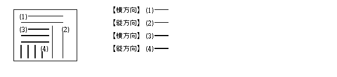
行頭位置を一時的に移動する。
LEN : 2 SUBID: 5 ATTR : UB --- -- 未使用
直後の文字の文字開始位置に行頭位置を一時的に移動する。
改行、改段落、改コラムコード、もしくは、改行、改段落を伴う付箋が出現するまで有効となる。
1行内に複数個の「行頭移動指定付箋」が存在した場合は、最初のみ有効となり、
2番目以降は無視される。
文字指定付箋は、文字の表現形態の指定を行なう文章付箋セグメントである。
現在処理中の国語の文字セットでのУправління шрифтами (Font Manager)を、 Управління шрифтами (Font Manager)クラスおよびУправління шрифтами (Font Manager) ( ファミリー ) 名により指定する。
LEN : 4〜
SUBID: 0
ATTR : UB − -- 未使用
DATA : UH class -- Управління шрифтами (Font Manager)クラス
[UB name[]] -- Управління шрифтами (Font Manager) ( ファミリー ) 名
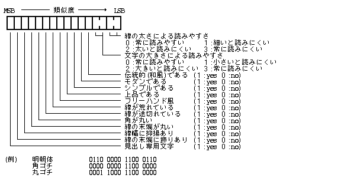
Управління шрифтами (Font Manager)のバリエーションとしてのУправління шрифтами (Font Manager)属性を指定する。
LEN : 4 SUBID: 1 ATTR : UB − -- 未使用 DATA : UH attr -- Управління шрифтами (Font Manager)属性
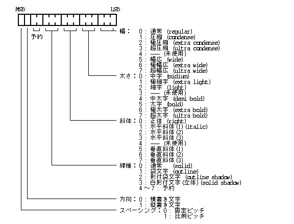
文字サイズの指定を行なう。
LEN : 4 SUBID: 2 ATTR : UB − -- 未使用 DATA : CHSIZE size -- 文字サイズ
この付箋は基準となる文字サイズを指定し、文字拡大/縮小指定付箋、 または別の文字サイズ指定付箋が現れない限り、このサイズで表示される。 文字サイズ指定付箋が存在しない間は、 アプリケーション依存のデフォルトの文字サイズが基準となる。
文字サイズの拡大 / 縮小の指定を行なう。
LEN : 6
SUBID: 3
ATTR : UB − -- 未使用
DATA : RATIO h_ratio -- 文字高さ ( サイズ ) の拡大率
RATIO w_ratio -- 文字幅の拡大率
拡大 / 縮小の基準となる文字サイズは、 直前の文字サイズ指定付箋で指定された値であり、 拡大/縮小された値ではない ( アプリケーション依存のデフォルトの文字サイズが基準となる ) 。 例えば、通常幅 ==> 1 / 2幅 ==> 通常幅 の表現をこの付箋で行なう場合には、 文字幅を 1 / 2 倍にする付箋の後の文字列が 1 / 2 幅となり、 次に文字幅を 1 倍 ( 2 倍ではない ) にする付箋の後の文字列が通常幅となる。
文字の間隔を指定する。
LEN : 4 SUBID: 4 ATTR : UB attr -- 属性指定 DATA : SCALE pitch -- 間隔指定
DSxx xxxG
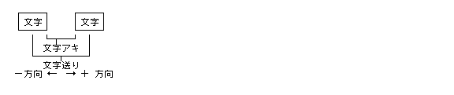
文字の回転を指定する。
LEN : 4
SUBID: 5
ATTR : UB abs -- 絶対 / 相対指定
DATA : UH angle -- 文字の横軸の反時計回りの回転角度
( 360 度の剰余が有効 )
xxxx xxxA
文字のカラーを指定する。
LEN : 6 SUBID: 6 ATTR : UB − -- 未使用 DATA : COLOR color -- 文字カラーの指定
文字の基準位置 ( ベースライン ) の移動量を指定する。
LEN : 4 SUBID: 7 ATTR : UB attr -- 属性指定 DATA : SCALE base -- 基準位置移動量
Dxxx xxxx
特殊文字指定付箋は、 1 つの特殊な文字として取り扱われる文章付箋セグメントである。
任意の固定幅の空白を示す。 これは、1 つの文字として取り扱われるため、 行をまたがることはない。 つまり、指定された空白幅に満たないうちに行末に至った場合、 次の行の先頭から固定幅空白全体 ( 残りの空白ではない ) が配置される。
LEN : 4 SUBID: 0 ATTR : UB − -- 未使用 DATA : SCALE width -- 空白の幅
1 行または 1 つのフィールドの空き領域を指定した文字列で充填する。 1 行または 1 つのフィールド中に複数の充填文字がある場合は、 それぞれの充填文字の幅は均等となる。
LEN : 〜 SUBID: 1 ATTR : UB − -- 未使用 DATA: UB str[] -- 充填文字列
充填される領域は行またはフィールドの左端から右端の間であり、 以下に示す用途に使用される。
(1) 【充填文字:空白】AA<改行> (2) 【充填文字:空白】AA【充填文字:空白】<改行> (3) AA【充填文字:空白】BB<改行> (4) AA【充填文字:空白】BB【充填文字:空白】CC<改行> (5) 【充填文字:空白】A【充填文字:空白】B【充填文字:空白】<改行> (6) ○○【充填文字:abc】<改行> (7) 第1項【充填文字:--】1<改行><TAB>1.1【充填文字:--】2<改行>

罫線列を示す。この付箋は主に既存のデータの変換を目的としている。
LEN : 4 + 罫線列データ数
SUBID: 2
ATTR : UB type -- 罫線のタイプ
DATA : UH count -- 罫線列の繰り返し数
UH lines[] -- 罫線指定データ列( LEN で指定されたデータ数 )
UUUU KKKK

UH vline : 上下の罫線属性 ( 上位バイトが上 )
UH hline : 左右の罫線属性 ( 上位バイトが左 )
: : ( 上記の 2 ワードのデータ列 )
文字間 / 行間罫線の場合 ( type 1 ) :
UH tlline : 上及び左の罫線属性 ( 上位バイトが上 )
: : ( 上記の 1 ワードのデータ列 )
罫線文字の場合 ( type 2 ):
UH code : 罫線文字の TRON コード
: : ( 上記の1ワードのデータ列 )
上 -- vline の上位バイト 下 -- vline の下位バイト 左 -- hline の上位バイト 右 -- hline の下位バイト


( 文字罫線 )
罫線として取り扱う文字の TRON 仕様コードを指定する。
vline, hline, tlline で指定される罫線の属性は、以下のデータであり、
線幅 = 0 の場合は、その部分の罫線がないことを意味する。
DIWW KKKK
文字割付け指定付箋は、文字のレイアウトに関連する指定を行なうもので、 開始付箋と終了付箋に囲まれた範囲の文字データに対して有効となる。
文字列の途中での改行を禁止することを指定する付箋であり、結合開始と結合終了 で囲まれた、文字列の途中での改行を禁止する。 結合文字列が 1 行の幅より大きい場合の処理はインプリメントに依存する。
LEN : 2 SUBID: 0 -- 結合開始指定付箋 ATTR : UB − -- 未使用 LEN : 2 SUBID: 1 -- 結合終了指定付箋 ATTR : UB − -- 未使用
指定した幅の領域に文字を指定した方法により割付けることを指定する。 この付箋は、変数参照指定付箋と組み合せて、 不定長の文字列を固定の枠に割付ける場合に有効となる。
LEN : 4 SUBID: 2 -- 文字割付け開始指定付箋 ATTR : UB kind -- 種類 DATA : SCALE width -- 割り付け幅 LEN : 2 SUBID: 3 -- 文字割付け終了指定付箋 ATTR : UB − -- 未使用
【割付け開始】対象文字・・・【割付け終了】
文字の前または後ろに付く、上付き / 下付きの添字を指定する。 前付きの時は対象文字の直前に、後ろ付きの時は対象文字の直後に付箋をおく。
LEN : 6
SUBID: 4 -- 添字開始指定付箋
ATTR : UB type -- タイプ
DATA : SCALE pos -- 文字位置の移動量
RATIO size -- 文字サイズの比率
LEN : 2
SUBID: 5 -- 添字終了指定付箋
ATTR : UB − -- 未使用
Fxxx xxDU
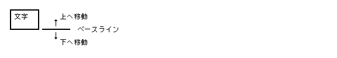
【添字開始】添字・・・【添字終了】対象文字 -- 前付き 対象文字【添字開始】添字・・・【添字終了】 -- 後付き
(1) 【上付き】AA【下付き】BB【終了】□ (2) 【上付き】AA【上付き】BB【終了】□ (3) 【上付き】AA【終了】【下付き】BB【終了】□ (4) 【上付き】AA【終了】【上付き】BB【終了】□
※ (2) では2つの添字のベース位置指定が異なるとする
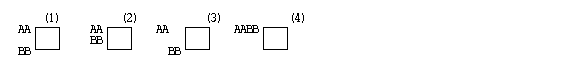
(1) □【上付き】AA【下付き】BB【終了】 (2) □【上付き】AA【上付き】BB【終了】 (3) □【上付き】AA【終了】【下付き】BB【終了】 (4) □【上付き】AA【終了】【上付き】BB【終了】
※ (2) では2つの添字のベース位置指定が異なるとする

ルビを付けるための指定である。
LEN : 〜 SUBID: 6 -- ルビ開始指定付箋 ATTR : UB attr -- ルビ属性 DATA : UB rubi[] -- ルビ文字列 LEN : 2 SUBID: 7 -- ルビ終了指定付箋 ATTR : UB − -- 未使用
UUUU xxxP
【ルビ開始(ルビ文字)】対象文字・・・【ルビ終了】
行頭、行末の禁則処理の指定である。
LEN : 〜 SUBID: 8 -- 行頭禁則指定 ATTR : UB kind -- 行頭禁則タイプ [DATA : UB ch[]] -- 行頭禁則対象文字 LEN : 〜 SUBID: 9 -- 行末禁則指定 ATTR : UB kind -- 行末禁則タイプ [DATA : UB ch[]] -- 行末禁則対象文字
XXXL KKKK
文字修飾指定付箋は、文字の修飾を行なうもので、 開始付箋と終了付箋に囲まれた範囲の文字データに対して修飾が行なわれる。
文字列の修飾を指定する。
LEN : 2,6 SUBID: type -- 文字修飾開始付箋 ATTR : UB attr -- 属性 DATA : [COLOR color] -- 修飾カラー指定(省略可能) LEN : 2 SUBID: type + 1 -- 文字修飾終了付箋 ATTR : UB − -- 未使用 SUBID: 文字修飾のタイプ ( 終了付箋の場合の SUBID は対応する値 + 1 となる。)
| 0 : | 下線開始 | 1: | 下線終了 |
| 2 : | 上線開始 | 3: | 上線終了 |
| 4 : | 打ち消し線開始 | 5: | 打ち消し線終了 |
| 6 : | 枠囲み線開始 | 7: | 枠囲み線終了 |
| 8 : | 上 ( 右 ) 傍点開始 | 9: | 上 ( 右 ) 傍点終了 |
| 10 : | 下 ( 下 ) 傍点開始 | 11: | 下 ( 下 ) 傍点終了 |
| 12 : | 反転開始 | 13: | 反転終了 |
| 14 : | 網掛開始 | 15: | 網掛終了 |
| 18 : | 無印字開始 ( 終了付箋までのデータを印字しない ) | ||
| 19 : | 無印字終了 | ||
| 20〜127 : | ( 予約 ) | ||
| 128〜 : | 未定義 ( アプリケーション依存 ) | ||
下線、上線、打ち消し線、枠囲み線 の場合 : 以下の線属性
DIWW KKKK
上、下傍点の場合 : 以下の傍点属性
xxxx KKKK
反転の場合: 以下の反転属性
Axxx xxxx
網掛 / 背景の場合: 以下のパターン属性
AIDD KKKK
無印字の場合 : 意味を持たない。
【文字修飾開始】対象文字・・・【文字修飾終了】従って、異なる種類の文字修飾(例えば、網掛と下線) は重複して指定することができる。
【網掛開始】AA【下線開始】BB【網掛終了】CC【下線終了】
下線
|------|
AABBCC
|------|
網掛
変数参照指定付箋は、変数を参照する付箋であり、 指定した変数の現在の値を表現する文字列に置き換わることになる。
指定した変数の現在値を表現する文字列に置き換える。 変数の参照方法として、ID 番号を指定する場合と、 変数名を指定する場合がある。
LEN : 4 SUBID: 0 -- 変数参照 ATTR : UB − -- 未使用 DATA : H var_id -- 変数ID LEN : 〜 SUBID: 1 -- 変数参照 ATTR : UB − -- 未使用 DATA : UB name[] -- 変数名
参照する変数は、特定の ID または名前で予めユーザの実行環境に登録され ている必要があり、この登録は基本的に設定付箋により行なわれる。 正の変数 ID は自動的に登録されるシステム変数に使用され、 以下のものが定義されている。
0 : 自分自身の実身名 100 : 年 ( 西暦下 2 桁 ) 101 : 年 ( 元号 ) 110 : 月 ( 数字 ) 111 : 月 ( 数字 2 桁 ) 112 : 月 ( 英小文字 3 文字 ) 113 : 月 ( 英大文字 3 文字 ) 120 : 日 ( 数値 ) 121 : 日 ( 数値 2 桁 ) 200 : 現在ページ番号 ( 数字表現 ) 201 : 現在ページ番号 ( 小文字ローマ数字表現 ) 202 : 現在ページ番号 ( 大文字ローマ数字表現 ) 250 : 全体ページ番号 ( 数字表現 ) 251 : 全体ページ番号 ( 小文字ローマ数字表現 ) 252 : 全体ページ番号 ( 大文字ローマ数字表現 )
負の変数 ID は、アプリケーションにより定義されるユーザ変数として使用される。
文章メモ指定付箋は、ユーザが任意に設定したメモを保持する付箋である。 この内容は単なるメモとしての文字列であるが、 アプリケーションによっては、 メモ文字列の内容が所定の文字列と一致した場合には、 何らかの効果を持つ場合もある。
ユーザが設定したメモを保持する。
LEN : 〜 SUBID: 0 ATTR : UB − -- 未使用 DATA : UB memo[] -- メモ文字列
文章アプリケーション指定付箋は、 アプリケーションが独自に定義して使用する付箋であり、 その内容はアプリケーションにより規定される。 内容を定義しているアプリケーション ID が内部に含まれており、 同一データタイプ ID を持つアプリケーションのみ、 その内容を理解できることになる。
アプリケーション固有のデータを保持する。
LEN : 〜
SUBID: − -- アプリケーション定義
ATTR : UB − -- アプリケーション定義
DATA : UH appl[3] -- アプリケーションID
UB param[] -- アプリケーション・パラメータ
appl: 付箋の内容を定義しているアプリケーション ID。
アプリケーション ID 中のデータ ID 毎にこの付箋の内容が定義され
る。